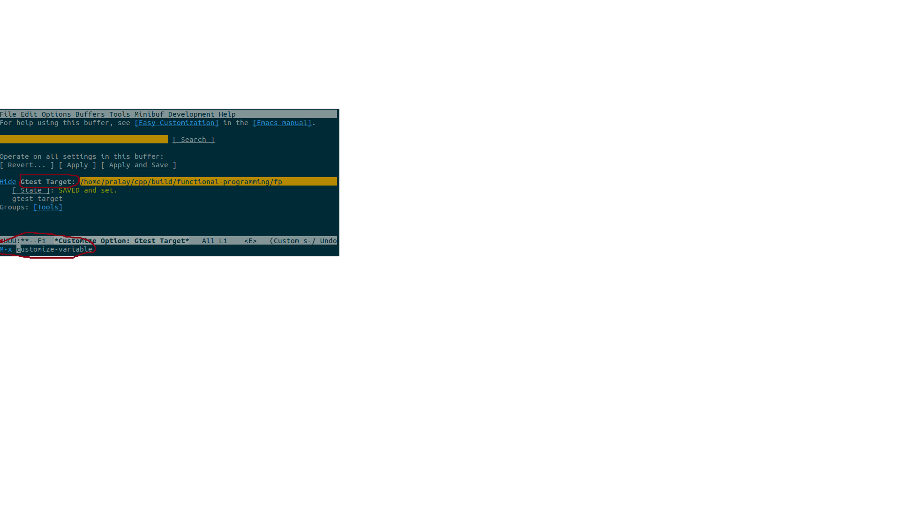
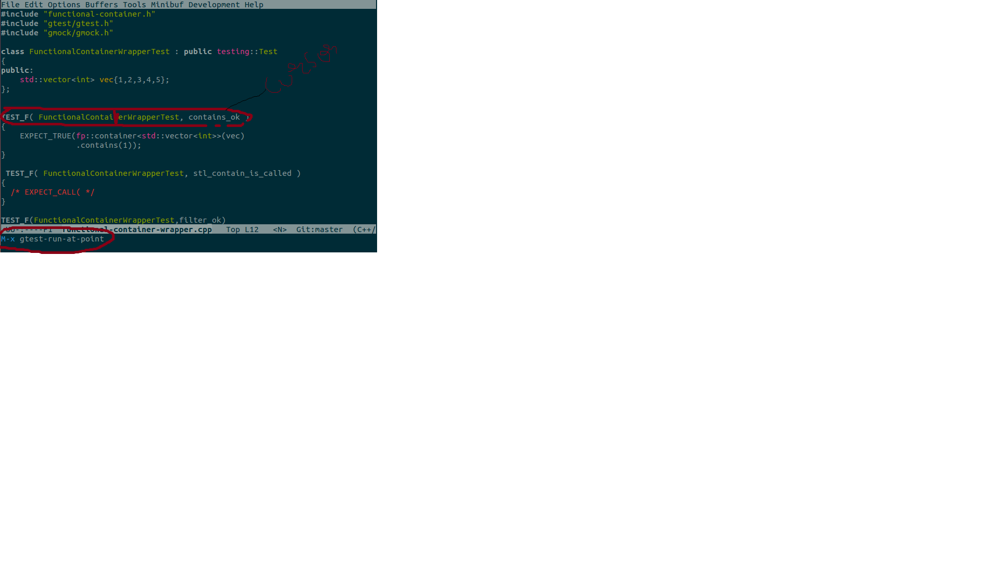
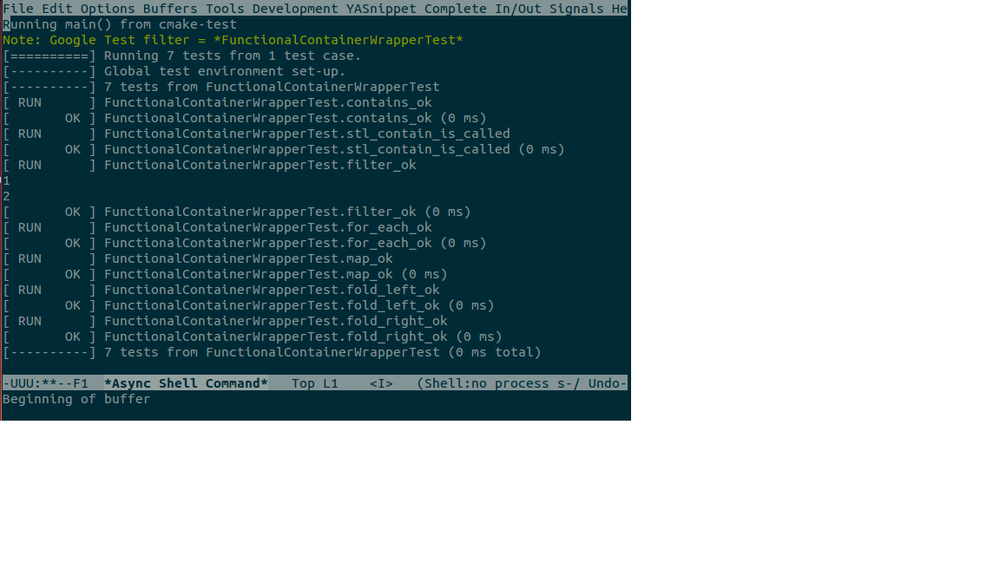

README
Table of Contents
Simple test runner to list and run the tests interactively.
1 Usage:
1.1 Set the target path
Set the gtest target (executable which contains test) path in variable "gtest-target"
M-x customize-variable gtest-target "full path to the gtest target"

1.2 List Tests:
M-x gtest-list
1.3 Run Tests:
1.3.1 Usage 1:
- list tests
- go to the test to run and run 'gtest-run-at-point'

1.3.2 Usage 2:
- open the source and go to the test (macro) to run

- run 'gtest-run-at-point'
1.3.3 Usage 3:
- run 'gtest-run' either specify the test or entire test fixture to run .
